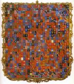

Campo Lugar
 De: La Frikipedia, la enciclopedia extremadamente seria.
De: La Frikipedia, la enciclopedia extremadamente seria.

|
Este artículo necesita ser ilustrado. Busca una afoto en nuestro depósito de imágenes o donde sea y ponla, pero que no sea pr0n, que se cabrea el señor del adSense y nos corta el grifo de los dólare. Y sin dólare no hay servidor...
|
| De la serie ciudades del mundo:
|
| Campo Lugar
|
|
|

|
| (Bandera)
|
(Escudo de armas)
|
|
| Topónimo oficial
|
{{{topofi}}}
|
| País
|
Reino de Cáceres, España
|
| Código postal
|
¿Acaso llegan las cartas allí?
|
| Superficie
|
Casi toda llena de campo
|
| Altitud
|
Escasa, todas las casas son enanas
|
| Distancia
|
Mínima, es un pueblo canijo de mierda
|
| Fundación
|
A Saber
|
| Población
|
Casi toda pueblerina
|
| Gentilicio
|
Campuseños
|
| Alcalde
|
El Panadero
|
Pueblo canicas.
En Campo Lugar, hace un tiempo, una corporación trató de instalar en tierras campuseñas sus instalaciones para la investigación nuclear. Oficialmente no se hizo, pero hay quien dice que si que se ha instalado, bajo tierra, una inmensa planta nuclear para la investigación y pruebas de experimentos. Vamos, que pasa algo parecido a Resident Evil.
Situación Geográfica
Como anteriormente se cita, Campo Lugar se situa dentro del prestigioso reino cacereño. De hecho, Campo Lugar es un asentamiento estratégico, ya que cuenta con un reactor nuclear secreto, escondido dentro de uno de los muchos caserones que hay en el pueblo.
Pueblos rivales
Debido a la buena situación del pueblo dentro del reino Abertura de Patas, Mihás, Birramesías, Arcollarón, Pisarro, o Zorrita no dan la bienvenida a los campuseños.
Gentilicios
Los habitantes de Campo-Lugar pueden ser llamados de muchas maneras. El gentilicio oficial es campuseño, pero hay algunos que por su labor antisocial se les podría denominar como:Cotillas, garrulos, follacabras, follabichos, raros, incultos, asquerosos, celestinos, metomentodo, ...
Personajes famosos y celebridades
Personajes famosos que son o habitan en Campo Lugar son:
- Emiliano, el ex-alcalde
- El Panadero, nuevo alcalde
- El Gran Keko
- Las liantas, las manejantas
- Las cotillas
- Los Morabís
- Petrina
- Jacinto El Boa
- Cancho
- Ignacio
- Fernando el "Abeto"
- Muchos tontainas que no se incluyen en la lista porque sino sería infinita.
Patrocinadores
- El puticlub Samba
- Bar La Fuente.
- Construcciones Ramos.
- Caja Extremadura.
- Comercial Robert.
- Cafeteria Del Cruce.
- Construcciones Bogala.
- Talleres Fuentes.
- Bar de la 3º Edad.
- La Gasolinera.
- Cooperatica Nuestra Señora De Los Angeles.
- Construcciones Fernández.
- Caja Duero.
- Bar Miajón.
- Comercio Ilu.
- Bar Discoteca Yasta.
- Carpinteria Metálica Peña Gutiérrez.
- Farmacia.
Lugares de Interés
Campo Lugar cuenta con muchos lugares muy frecuentados y dignos de visitar por los turistas:
- La Banca, donde hay un cartel grande de "Banca Pueyo, ahora en Móstoles y Alcorcón"
- El Kiosko, lugar de referencia, donde es muy habitual quedar todos los chavales. Actualmente ha sido derribado, debido a que el ácido úrico vertido por la mayoría de campuseños ha hecho que su estructura corriera graves riesgos de derrumbamiento. En su lugar ahora solo hay bancos y una cabina telefónica.
- La cigueñela (Bar Pepete)
- La Ilu, kiosko actual, donde se puede adquirir todo tipo de sustancias, tengas la edad que tengas.
- La Carretera, esa franja que divide al pueblo en dos
- La Plaza del Ayuntamiento, plaza donde se dan las verbenas en las fiestas, y desde donde se llama por una cabia telefónica para gastar bromas. Antiguamente, en la plaza se situaba una fuente de agua, que fue sustituida por unsa insulta farola.
- Los Bares de Enrique, Julio, Los Viejos, y el Miajón, bares donde la veteranía del pueblo va a pasar el tiempo y a malgastar su dinero a base de carajillos, whisky y demás alcoholes.
- La Piscina, lugar que en verano es frecuentado por casi todo el pueblo, donde se acude para echar una meadita y quedarse bien agusto. Además de que en sus traseras se realizan casi todos los botellones de los jovenes. Actualmente, la Piscina es frecuentada por plagas de pulgas,piojos y extraterrestres.
- Corral de Cabras, o de Pinokio
- Nuestro Local
- Otros Locales
- El Canal, donde todo el mundo va en verano para pegarse un remojón y así no tener que pagar la entrada de La Piscina. También es usado frecuentemente como lavadero de coches.
- El Cuartel Viejo, o el Cuártel, casa asquerosa donde se van los jovenes a beber y ponerse como cubas, para luego no recordar nada de lo sucedido.
- La Compresa, situada en la plaza de la Iglesia, a modo de rotonda. Su origen es incierto, ya que existen varias teorías al respecto. La teoría más importante es la que dice que la famosa Compresa cayó del cielo de la noche a la mañana, procedente de una nave campuseños se comportan de forma extraña, diciendo frases sin sentido como "Telefono... Mi casa..." o "Objetivo: Exterminar la humanidad".
- Iglesia, lugar de culto para los campuseños.
- El Parque, al lado de la Saca
- La Saca, al lado del parque.
- Multitud de pozos de agua
- El Parque de la iglesia
- El Río
- El Cruce, La Gasolinera y el prostíbulo
- Mucho campo alrededor del pueblo
- Poco pueblo alrededor del campo.
- Según se escupe, a mano izquierda.
- Según se mea, a mano derecha.
- Según se caga, de frente.
Deportes
Salvo el cotilleo,tradicionalmente en el pueblo no se suele practicar ningún deporte, excepto prender fuego el campo. Eso si, en Campo Lugar está la sede de la Liga de Cotilleo Española. Este es un torneo, en el cual, las marujas, marujos, y todo el que quiera apuntarse, participa para ver quien es el más cotilla. Gana quien hable de más gente, y cuanto más se le insulte y critique, más puntos se obtendrán para la clasificación general.
Actualmente, el pueblo tiene un proyecto pionero en el ámbito de la Fórmula 1, ya que ha presentado un nuevo equipo para esta competición: Navidul Campo-Lugar Team.
Las Instalaciones deportivas de Campo Lugar son:
- Circuito Urbano de Campo Lugar
- Campo Municipal de Furbo
- Pistas Deportivas del Colegio Llanos de la Vega
- Pista de Fútbol-Sala/Tenis
- Piscina Municipal
- Botellódromo(Próximamente será construido)
Fiestas y tradiciones
En Campo-Lugar se tienen unas costumbres muy típicas de pueblo. Sus fiestas son:
- Navidades, para celebrar el nuevo año. Abundancia de botellones
- Carnaval, donde todo el pueblo se desmadra con la Vaca Embolá, portada por los Kintos correspondientes. Sin faltar por supuesto los botellones.
- Semana Santa, otra fecha escusa para ir al pueblo y hacer botellones
- Verano, cuando va la gran parte de la chavalería, para hacer más y más botellones.
Autor(es):
- Nexo
- Fordus
- Alex2610
- JJ P 22
- Deltoya
- Invierno
- Campo
- ArreKarallo
- Campuseño2007
- RaRaRa
Frikipedia 2005-2016, Licencia
GFDL 1.2 - Extraído por FrikiLeaks